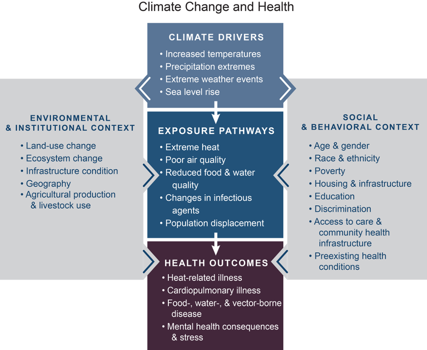

Unpacking the relationship between weather extremes and health requires not only technical skills, but also a strong theoretical foundation. Extreme weather, health, and their relationships are all complex. Researchers begin by conceptualizing—for their specific questions—1) the nature of the extreme weather event, 2) the details of the health outcome, and 3) the temporal and spatial relationships between extreme weather and the health phenomena of interest.

Beyond these three elements, contextual factors are crucial for identifying the complex causal pathways among weather extremes and health. Figure 1 illustrates how the pathway from an extreme weather event, its manifestation in the environment, and its impact on various health outcomes is embedded within larger contexts. As suggested by the gray box on the right, individuals will be impacted by extreme weather in unique ways based on their demographic characteristics and social determinants that affect their lived experiences. The gray box on the left illustrates how environmental and institutional contexts will also influence relationships between extreme weather events and health. Contexts influence the impact of exposures on individuals as well as their mitigation and adaptation strategies in response to extreme weather risks.
Building a conceptual model
Below, we provide the steps in creating a tailored conceptual model for research on extreme weather and health.
1. Assessing the temporal and spatial nature of extreme weather risk
Risks arising from weather extremes vary in their temporal and spatial scales. In terms of timing, risks may be acute or protracted. Acute risks arise when one-time exposure to an extreme weather event is sufficient to trigger health outcomes, for example, when flooding makes water unsafe for drinking. Protracted risks, in contrast, arise from sustained exposure to extreme weather, such as the inhalation of dust over the course of enduring dry periods. The impact of extreme weather is also spatially variable. While some events affect wide areas, others’ scope is limited to discrete locations. Determining the type of risk depends on both the nature of the extreme weather event and the health outcome studied. Identifying the temporal and spatial dimensions of risk provide the basis for decisions concerning temporal aggregation of environmental data, as well as the length of expected lags between initial exposure to an extreme weather event and the manifestation of the health outcome.
3. Understanding environmental and institutional contexts
Environmental and institutional contexts are also influential in shaping causal pathways between weather extremes and health. The physical environment, such as altitude and the demarcation of seasons, can provide some level of protection from some extreme weather events. For instance, a small reduction in annual rainfall can have a devastating effect in an arid location where there is a close correspondence between a rainy season and agricultural production.4 The same reduction in rainfall might have only a minor impact in a location where annual precipitation is diffused throughout the year and is less closely tied to the agricultural season. Understanding such differences is important for selecting accurate measurements. In the former location, the rain shortfall might best be measured through the length of the rainy season. In the latter location, considering rainfall deviation from a monthly or annual average could be more appropriate.4
Institutional contexts include the built environment, such as the presence of roads, wells, and irrigation systems, as well as organizations designed to facilitate human capabilities, such as political, healthcare, and education systems. Local governments’ capacities to intervene to protect populations faced with risks of extreme weather can reduce negative health outcomes. Healthcare systems affect the accessibility of treatment (both physically and financially), while education systems provide individuals with the knowledge of when and how to respond to weather events. Extreme weather and health research that fails to capture these contextual effects can lead to faulty conclusions.
Conclusion
Theorizing the core relationship among specific extreme weather events and specific health outcomes is the first step in developing a conceptual model but is insufficient to fully capture complex causal pathways. Individual characteristics, social determinants of health, and environmental and institutional environments are also critical. Informed and clearly identified spatial and temporal measurement of environmental exposures is necessary, and these exposures should be thoughtfully, appropriately, and explicitly linked to the particular health outcomes of interest. Community-focused expertise and stakeholder engagement is vital to fully understand and incorporate how broader contexts interact with local circumstances to uniquely influence how weather extremes are experienced.
For more information
To learn more about the technical modeling implications of conceptual models of extreme weather and health, see Dorélien and Grace (2023).4
To see a specific model of the impact of weather extremes on women’s reproductive health in Africa, see Grace (2017).3
For further delineation of the elements in models of extreme weather and health (in the U.S. context), see Balbus et al. (2016).5
Getting Help
Questions or comments? Check out the IPUMS User Forum or reach out to IPUMS User Support at ipums@umn.edu.